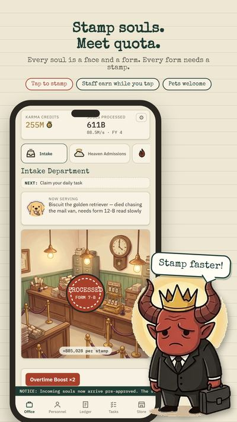
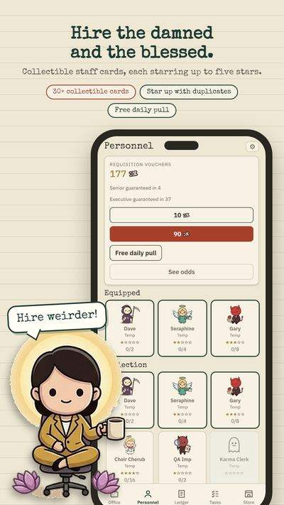
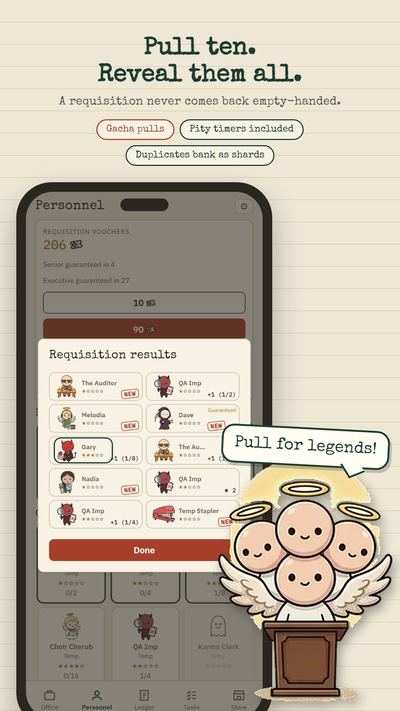
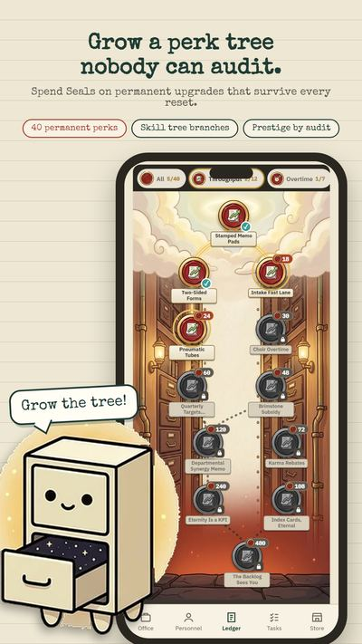

Afterlife Bureaucracy is an offline idle clicker tycoon where you run Heaven and Hell's paperwork office.
Afterlife Bureaucracy: Idle
Get it on Google PlayWhat it is for
Death is not the end. It is an intake form. Stamp souls, hire chibi staff, unlock Heaven and Hell and grow an office empire that keeps earning while you are away. It is an idle game to play a few minutes a day, for fans of Cookie Clicker and AdVenture Capitalist.
Features
- Tap the stamp to process souls and earn Karma Credits, then hire staff who keep stamping for you
- Over 250 souls with their own faces, causes of death and requests
- Six departments to unlock, each with its own staff and upgrades
- Prestige: file an Audit, bank Departmental Seals and spend them in the Perk Ledger
- 30 collectible personnel cards that level up to five stars
- Offline earnings with an upgradeable cap, plus daily tasks, login streaks and 80 achievements
- Optional Google sign-in with cloud save, Play Games achievements and a leaderboard
- Light and dark theme
Screenshots




Frequently asked questions
Can I play Afterlife Bureaucracy offline?
Yes. It is an offline idle clicker. When you close the app your staff keep working, and when you return you see the Overnight Backlog Report with what was processed. Offline earnings have an upgradeable cap.
Does the game have ads?
Rewarded ads only. There are no banners and no interstitials. An optional ad can double the Overnight Backlog Report.
Does it have in-app purchases?
Purchases are optional, and everything in the game can be earned by playing. Requisition Vouchers can be bought and spent on personnel cards; the full odds are published in the app.
How do I play?
Tap the stamp to process souls by hand and earn Karma Credits. Hire staff so the office keeps stamping for you, unlock departments, and file an Audit when the fiscal year closes to bank Departmental Seals for permanent bonuses.
How much time does it need?
A few minutes a day is enough. The pacing is built for short sessions, with daily tasks and login streaks.
Can I move my progress to a new phone?
Optional Google sign-in provides cloud save, so your desk follows you to a new phone.